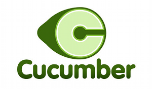

Cucumber
| Author | Logo A | Logo B |
|---|---|---|
| Gideon Bullock | ||
| Daniel Lopes | ||
| Kevin Mears |  | |
| Dan Ryan | ||
| Ib Samulski | ||
| Trevor Smith | ||
| Joseph Wilk and Matthew Bennett |  |
Welcome
This is the future home page for Cucumber - a tool that supports Behaviour Driven Development. Cucumber takes plain text software documentation as input and executes it as automated tests. Cucumber supports over 20 natural languages and can be used to test applications written in Ruby, Java, .NET or Flex or web applications written in any language.